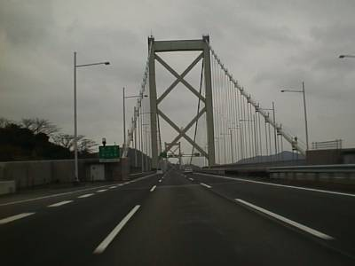
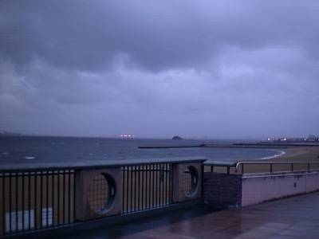
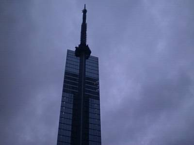
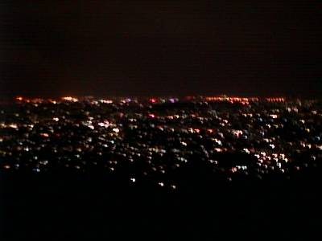

my treasure box
−1999/3/7−
福岡についたのはいいのですが、雨と風が激しく、それに日曜日で車通りも多くなかなか思うように動けません。当初は、鹿児島までいきたいなあ・・・。と思っていましたが、ちょっと無理ですね。ということで、福岡にとどまり、しばらくはホームページづくりに専念。
| ○岡山県岡山市 発 |
| ＝＞ 山陽自動車道 −＞ 九州自動車道 −＞ 国道３号線 −＞ （市内は省略） ＝＞ |
| ○福岡県福岡市 着 |

関門橋を渡り、ついに九州に突入です。
〜福岡市〜
福岡について早速博多ラーメンを食し、大満足。

そして、なんとかたどり着いた百達。博多湾の南側に位置している場所です。ここには、福岡タワー、福岡ドームもあります。しかし、この日は天気が悪く、海沿いというのもあって、風が強いわ、雨が降っているわで大変でした。早速傘の骨が折れました。その中で何とか撮影した博多湾です。

上の写真の反対側には、福岡タワーがあります。塔のてっぺんには、ハートとそれを射抜く矢がライトで形作られ、ホワイトデーかあ・・・。としみじみ。福岡ドームは撮れずじまい。残念。
そのあとはホームページ作成に専念。そして夜になっていろいろと街を回っていたら、下の写真のような場所にいました。

きれいな夜景・・・。写真ではうまく伝わらないかもしれませんね。しばらく見入ってしまいました。こんなにきれいな夜景をみたのは初めてです。隣に恋人でもいるようなロマンチックな気分になりました。
さてさて、福岡も堪能し、明日から帰宅です。長かった旅ですが、楽しかった。これで終わりか・・・。
と思いきや！！